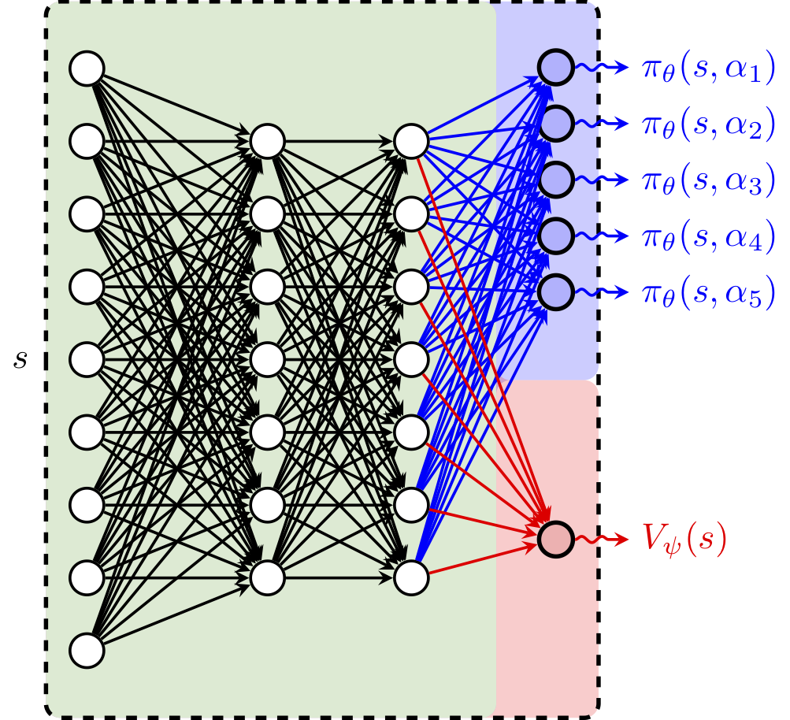
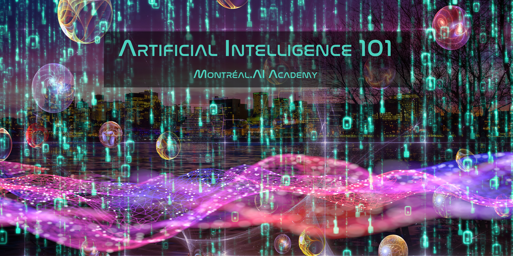

Montréal.AI Academy
ARTIFICIAL INTELLIGENCE 101
AI 101: The First World-Class Overview of AI for All
Location: NRH Prince Arthur - Ballroom B, 3625 Avenue du Parc, Montreal (Québec), Canada, H2X 3P8.
Encompassing all facets of AI, the General Secretariat of MONTREAL.AI presents, with authority and from insider knowledge: “Artificial Intelligence 101: The First World-Class Overview of AI for the General Public“.
AI opens up a world of new possibilities. This AI 101 tutorial harnesses the fundamentals of artificial intelligence for the purpose of providing participants with powerful AI tools to learn, deploy and scale AI.
A Well-Crafted Actionable 75 Minutes Tutorial
POWERFUL & USEFUL. This actionable tutorial is designed to entrust participants with the mindset, the skills and the tools to see artificial intelligence from an empowering new vantage point by :
— Exalting state of the art discoveries and science ;
— Curating the best open-source codes & implementations ; and
— Embodying the impetus that drives today’s artificial intelligence.
Program overview (“Pioneering an Impactful Understanding of AI”) and tickets: https://montrealai101.eventbrite.ca
Language: Tutorial given in English.
You are qualified for a career in machine learning!
VIP AI 101 CheatSheet for All
For the purpose of entrusting all sentient beings with powerful AI tools to learn, deploy and scale AI in order to enhance their prosperity, to settle planetary-scale problems and to inspire those who, with AI, will shape the 21st Century, Montréal.AI introduces the “VIP AI 101 CheatSheet for All”.
Artificial Intelligence 101 International Webinar
Location: This is an online event. Attendees will receive a link to join the event two (2) weeks prior to the event.
Program overview (“Pioneering an Impactful Understanding of AI”) and tickets: https://ai101webinar.eventbrite.ca
Language: Tutorial (webinar) given in English.
Curated Open-Source Codes, Implementations and Science
Montréal.AI is the largest artificial intelligence community in Canada. Join us and learn at https://www.facebook.com/groups/MontrealAI/ !

“The best way to predict the future is to invent it.“ — Alan Kay
0. Getting Started
Today’s artificial intelligence is powerful, useful and accessible to all.
Tinker with Neural Networks : Neural Network Playground — TensorFlow
On a Local Machine
Install Anaconda and Launch ‘Anaconda Navigator’
Update Jupyterlab and Launch the Application Under Notebook, Click on ‘Python 3’
- JupyterLab is Ready for Users — Project Jupyter
In the Cloud
- Colab: An easy way to learn and use TensorFlow — TensorFlow
- Access free GPU compute via Colab — TensorFlow
- Open in Colab — Open a Github-hosted notebook in Google Colab — colab-team
- TensorFlow Blog — TensorFlow
In the Browser
- TensorFlow dev summit Official TensorFlow.js Launch
- Introducing TensorFlow.js: Machine Learning in Javascript — Josh Gordon, Sara Robinson
- TensorFlow.js: Machine Learning for the Web and Beyond — Daniel Smilkov, Nikhil Thorat, Yannick Assogba, Ann Yuan, Nick Kreeger, Ping Yu, Kangyi Zhang, Shanqing Cai, Eric Nielsen, David Soergel, Stan Bileschi, Michael Terry, Charles Nicholson, Sandeep N. Gupta, Sarah Sirajuddin, D. Sculley, Rajat Monga, Greg Corrado, Fernanda B. Viegas, Martin Wattenberg
- TensorFlow.js — TensorFlow
- *Visual Studio Code running in the cloud using Binder — Tim Head
Datasets
- Making it easier to discover datasets — Natasha Noy
Preliminary Readings
“When you first study a field, it seems like you have to memorize a zillion things. You don’t. What you need is to identify the 3-5 core principles that govern the field. The million things you thought you had to memorize are various combinations of the core principles.“ — J. Reed
- Deep Learning — Yann LeCun, Yoshua Bengio, Geoffrey Hinton
- Papers With Code! | Over 950+ ML tasks, 500+ evaluation tables (including state of the art results) and 8500+ papers with code! — Atlas ML
- Learn X in Y minutes (Where X=python3) — Louie Dinh
- 6.S191: Introduction to Deep Learning | MIT’s official introductory course on deep learning methods and applications. — Alexander Amini and Ava Soleimany
- Practical Deep Learning for Coders 2019 — Jeremy Howard
- Foundations Built for a General Theory of Neural Networks — Kevin Hartnett
- The Matrix Calculus You Need For Deep Learning — Terence Parr, Jeremy Howard
- Introduction to the math of backprop — Deb Panigrahi
- Introduction to Applied Linear Algebra – Vectors, Matrices, and Least Squares — Stephen Boyd and Lieven Vandenberghe, Cambridge University Press
- What are the limits of deep learning? — M. Mitchell Waldrop
- “A birds-eye view of optimization algorithms” — Fabian Pedregosa
- Using Nucleus and TensorFlow for DNA Sequencing Error Correction — Gunjan Baid, Helen Li and Pi-Chuan Chang
- Dive into Deep Learning — Aston Zhang, Zack C. Lipton, Mu Li, Alex J. Smola
- How to visualize decision trees — Terence Parr, Prince Grover
- Machine Learning for Visualization — Ian Johnson
- Seeing Theory: A visual introduction to probability and statistics. — Daniel Kunin et al.
- explained.ai | Deep explanations of machine learning — Terence Parr
- What is torch.nn really? — Jeremy Howard
- Scipy Lecture Notes — Scipy
- Deep Learning and Robotics — Pieter Abbeel
- Natasha Jaques: “Recent advances in AI and machine learning” | Starsconf 2018 — Natasha Jaques | Starsconf 2018
- CS 188 | Introduction to Artificial Intelligence — Pieter Abbeel, Dan Klein
- A Concise Handbook of TensorFlow — Xihan Li
- The WIRED Guide to artificial intelligence — WIRED
- How to teach yourself hard things — Julia Evans
- UFLDL (Unsupervised Feature Learning and Deep Learning) Tutorial — Andrew Ng, Jiquan Ngiam, Chuan Yu Foo, Yifan Mai, Caroline Suen
- Interview with The Youngest Kaggle Grandmaster: Mikel Bober-Irizar (anokas) — Sanyam Bhutani, Hacker Noon
- Cutting-Edge Face Recognition is Complicated. These Spreadsheets Make it Easier. — Dave Smith
- A radical new neural network design could overcome big challenges in AI — Karen Hao
- Remarkable problem-solving ability of unicellular amoeboid organism and its mechanism — Liping Zhu, Song-Ju Kim, Masahiko Hara, Masashi Aono
- Competitive Programmer’s Handbook — Antti Laaksonen
- Machine Learning from scratch! — Quan Tran
- Rules of Machine Learning: Best Practices for ML Engineering — Martin Zinkevich
- A Neural Network in 11 lines of Python — iamtrask
- How to build your own Neural Network from scratch in Python — James Loy
- Deep Gaussian Processes — Neil D. Lawrence
- Magic Sketchpad — Monica Dinculescu
- AI Transformation Playbook — Andrew Ng
- Understand TensorFlow by mimicking its API from scratch — Dominic Elm
- Bias-Variance Decomposition — Sebastian Raschka
- SpaceSheet: Interactive Latent Space Exploration through a Spreadsheet Interface Paper | Demo | Tool — Bryan Loh, Tom White
- On intelligence: its creation and understanding — Surya Ganguli
- NeurIPS 2018 Videos — Thirty-second Conference on Neural Information Processing Systems
- Machine Learning is Fun! Part 3: Deep Learning and Convolutional Neural Networks — Adam Geitgey
- The Neural Aesthetic — Gene Kogan
- MONet: Unsupervised Scene Decomposition and Representation — Christopher P. Burgess, Loic Matthey, Nicholas Watters, Rishabh Kabra, Irina Higgins, Matt Botvinick, Alexander Lerchner
- Popular Machine Learning Algorithms Explained Project Jupyter | GitHub — Oleksii Trekhleb
- Introduction to Artificial Intelligence, ULiège, Fall 2018. — Gilles Louppe
- Deep Learning cheatsheets for Stanford’s CS 230 — Afshine Amidi, Shervine Amidi
- Machine Learning From Scratch — Erik Linder-Norén
- A Beginner’s Guide to the Mathematics of Neural Networks — A.C.C. Coolen
“1. Multiply things together 2. Add them up 3. Replaces negatives with zeros 4. Return to step 1, a hundred times.“ — Jeremy Howard

1. Deep Learning
“DL is essentially a new style of programming–”differentiable programming”–and the field is trying to work out the reusable constructs in this style. We have some: convolution, pooling, LSTM, GAN, VAE, memory units, routing units, etc.“ — Thomas G. Dietterich
1.1 Neural Networks
“Neural networks” are a sad misnomer. They’re neither neural nor even networks. They’re chains of differentiable, parameterized geometric functions, trained with gradient descent (with gradients obtained via the chain rule). A small set of highschool-level ideas put together.“ — François Chollet
- AI Playbook — Andreessen Horowitz
- Clear Explanations of Machine Learning — Distill
- Deep Learning Book — Ian Goodfellow, Yoshua Bengio, Aaron Courville
- Neural Networks and Deep Learning — Michael Nielsen
- Deep Learning — Vincent Vanhoucke | Google
- TensorSpace: Neural network 3D visualization framework —TensorSpace
- A Complete Implementation of a Toy Neural Network — Stanford CS class CS231n
- Neural networks: training with backpropagation — Jeremy Jordan
- Introduction to Machine Learning for Coders — Jeremy Howard
- Machine Learning Yearning — Andrew Ng
- Effective TensorFlow for Non-Experts — Google Developers
- Neural Network as Ordinary Differential Equations — Kevin Gibson
- A curated collection of inspirational AI-powered JavaScript apps — Elle Haproff, Asim Hussain, Osama Jandali
- Pytorch Implementation of Neural Processes — Chris Ormandy
- A Few Unusual Autoencoders — Colin Raffel
- Science of AI | How AI Training Scales — OpenAI
- Pytorch implementation of JointVAE, a framework for disentangling continuous and discrete factors of variation — Schlumberger Software Technology
- A New TensorFlow Hub Web Experience — André Susano Pinto, Clemens Mewald
- Approximate Fisher Information Matrix to Characterise the Training of Deep Neural Networks — Zhibin Liao, Tom Drummond, Ian Reid, Gustavo Carneiro
- Deep Learning on Graphs: A Survey — Ziwei Zhang, Peng Cui, Wenwu Zhu
- TF Jam — Shooting Hoops with Machine Learning — Abe Haskins
- Building Web App for Computer Vision Model & Deploying to Production in 10 Minutes*: A Detailed Guide — Pankaj Mathur
- Measuring the Effects of Data Parallelism on Neural Network Training — Christopher J. Shallue, Jaehoon Lee, Joe Antognini, Jascha Sohl-Dickstein, Roy Frostig, George E. Dahl
- Photo Wake-Up: 3D Character Animation from a Single Photo Paper | Project Page — Chung-Yi Weng, Brian Curless, Ira Kemelmacher-Shlizerman
- Relational inductive biases, deep learning, and graph networks — Peter W. Battaglia, Jessica B. Hamrick, Victor Bapst, Alvaro Sanchez-Gonzalez, Vinicius Zambaldi, Mateusz Malinowski, Andrea Tacchetti, David Raposo, Adam Santoro, Ryan Faulkner, Caglar Gulcehre, Francis Song, Andrew Ballard, Justin Gilmer, George Dahl, Ashish Vaswani, Kelsey Allen, Charles Nash, Victoria Langston, Chris Dyer, Nicolas Heess, Daan Wierstra, Pushmeet Kohli, Matt Botvinick, Oriol Vinyals, Yujia Li, Razvan Pascanu
- Avito Demand Prediction Challenge : Kaggle winner explains how to combine categorical, numerical, image and text features into a single NN that gets you into top 10 without stacking — Little Boat
- fast.ai | Making neural nets uncool again Intro Machine Learning | Practical Deep Learning | Cutting Edge Deep Learning | Computational Linear Algebra — Jeremy Howard, Rachel Thomas | Fast.AI
“I feel like a significant percentage of Deep Learning breakthroughs ask the question “how can I reuse weights in multiple places?”
– Recurrent (LSTM) layers reuse for multiple timesteps
– Convolutional layers reuse in multiple locations.
– Capsules reuse across orientation.“ — Trask
1.2 Recurrent Neural Networks
- Long Short-Term Memory — Sepp Hochreiter, Jürgen Schmidhuber
- Understanding LSTM Networks — Christopher Olah
- Attention and Augmented RNN — Olah & Carter, 2016
- Computer, respond to this email — Post by Greg Corrado
- How do Mixture Density RNNs Predict the Future? — Kai Olav Ellefsen, Charles Patrick Martin, Jim Torresen
- Reversible Recurrent Neural Networks — Matthew MacKay, Paul Vicol, Jimmy Ba, Roger Grosse
- Recurrent Relational Networks Blog | arXiv | Code — Rasmus Berg Palm, Ulrich Paquet, Ole Winther
- Massive Exploration of Neural Machine Translation Architectures arXiv | Docs | Code — Denny Britz, Anna Goldie, Minh-Thang Luong, Quoc Le
- A TensorFlow implementation of : “Hybrid computing using a neural network with dynamic external memory” GitHub — Alex Graves, Greg Wayne, Malcolm Reynolds, Tim Harley, Ivo Danihelka, Agnieszka Grabska-Barwińska, Sergio Gómez Colmenarejo, Edward Grefenstette, Tiago Ramalho, John Agapiou, Adrià Puigdomènech Badia, Karl Moritz Hermann, Yori Zwols, Georg Ostrovski, Adam Cain, Helen King, Christopher Summerfield, Phil Blunsom, Koray Kavukcuoglu & Demis Hassabis
1.3 Convolution Neural Network
“I admire the elegance of your method of computation; it must be nice to ride through these fields upon the horse of true mathematics while the like of us have to make our way laboriously on foot.“ — A. Einstein
- CNN Is All You Need — Qiming Chen, Ren Wu
- Feature Visualization — Chris Olah, Alexander Mordvintsev, Ludwig Schubert
- Explanatory Graphs for CNNs — Quanshi Zhang, Xin Wang, Ruiming Cao, Ying Nian Wu, Feng Shi, Song-Chun Zhu
- Understanding Neural Networks Through Deep Visualization — Jason Yosinski, Jeff Clune, Anh Nguyen, Thomas Fuchs, and Hod Lipson
- MedicalTorch — Christian S. Perone
- How to visualize convolutional features in 40 lines of code — Fabio M. Graetz
- Deep Learning for Generic Object Detection: A Survey — Li Liu, Wanli Ouyang, Xiaogang Wang, Paul Fieguth, Jie Chen, Xinwang Liu, Matti Pietikäinen
- A Unified Theory of Early Visual Representations from Retina to Cortex through Anatomically Constrained Deep CNNs — Jack Lindsey, Samuel A. Ocko, Surya Ganguli, Stephane Deny
- The Building Blocks of Interpretability — Chris Olah, Arvind Satyanarayan, Ian Johnson, Shan Carter, Ludwig Schubert, Katherine Ye, Alexander Mordvintsev
- Detectron : State-of-the-art Object Detection — Ross Girshick and Ilija Radosavovic and Georgia Gkioxari and Piotr Doll\’{a}r and Kaiming He
- YOLOv3: An Incremental Improvement | WebSite | YouTube — Joseph Redmon, Ali Farhadi
- From Recognition to Cognition: Visual Commonsense Reasoning — Rowan Zellers, Yonatan Bisk, Ali Farhadi, Yejin Choi
- AdVis.js : Exploring Fast Gradient Sign Method — Jason Lin, Dilara Soylu
- Machine Learning for Artists | Demos Page | This is how convolution works — Machine Learning for Artists
- Deep Painterly Harmonization | Notebook — Sylvain Gugger
- A Deep Learning based magnifying glass — Francesco Cardinale
- How Convolutional Neural Networks Work — Brandon Rohrer
1.4 Capsules
- Dynamic Routing Between Capsules — Sara Sabour, Nicholas Frosst, Geoffrey E Hinton
- Capsule Networks (CapsNets) – Tutorial — Aurélien Géron
- Understanding Hinton’s Capsule Networks. Part I: Intuition. — Max Pechyonkin
- Capsules for Object Segmentation — Rodney LaLonde, Ulas Bagci
- Brain Tumor Type Classification via Capsule Networks — Parnian Afshar, Arash Mohammadi, Konstantinos N. Plataniotis
- A Tensorflow implementation of CapsNet — Huadong Liao
2. Autonomous Agents
“No superintelligent AI is going to bother with a task that is harder than hacking its reward function.“ — The Lebowski theorem
2.1 Evolution Strategies
- A Visual Guide to Evolution Strategies — David Ha
- Evolution Strategies as a Scalable Alternative to Reinforcement Learning — OpenAI
- The Surprising Creativity of Digital Evolution: A Collection of Anecdotes from the Evolutionary Computation and Artificial Life Research Communities — Joel Lehman, Jeff Clune, Dusan Misevic, Christoph Adami, Lee Altenberg, Julie Beaulieu, Peter J. Bentley, Samuel Bernard, Guillaume Beslon, David M. Bryson, Patryk Chrabaszcz, Nick Cheney, Antoine Cully, Stephane Doncieux, Fred C. Dyer, Kai Olav Ellefsen, Robert Feldt, Stephan Fischer, Stephanie Forrest, Antoine Frénoy, Christian Gagné, Leni Le Goff, Laura M. Grabowski, Babak Hodjat, Frank Hutter, Laurent Keller, Carole Knibbe, Peter Krcah, Richard E. Lenski, Hod Lipson, Robert MacCurdy, Carlos Maestre, Risto Miikkulainen, Sara Mitri, David E. Moriarty, Jean-Baptiste Mouret, Anh Nguyen, Charles Ofria, Marc Parizeau, David Parsons, Robert T. Pennock, William F. Punch, Thomas S. Ray, Marc Schoenauer, Eric Shulte, Karl Sims, Kenneth O. Stanley, François Taddei, Danesh Tarapore, et al. (4 additional authors not shown)
- Evolving Neural Networks — Risto Miikkulainen
- Recombination of Artificial Neural Networks — Aaron Vose, Jacob Balma, Alex Heye, Alessandro Rigazzi, Charles Siegel, Diana Moise, Benjamin Robbins, Rangan Sukumar
- Nevergrad: An open source tool for derivative-free optimization — J. Rapin and O. Teytaud
- Evolved Policy Gradients — Rein Houthooft, Richard Y. Chen, Phillip Isola, Bradly C. Stadie, Filip Wolski, Jonathan Ho, Pieter Abbeel
- Using Evolutionary AutoML to Discover Neural Network Architectures — Google AI
2.2 Deep Reinforcement Learning
- Reinforcement Learning: An Introduction — Andrew Barto and Richard S. Sutton
- Spinning Up as a Deep RL Researcher — Joshua Achiam
- Intuitive RL: Intro to Advantage-Actor-Critic (A2C) — Rudy Gilman
- Simple Beginner’s guide to Reinforcement Learning & its implementation — Faizan Shaikh
- Spinning Up in Deep RL — Joshua Achiam
- AlphaStar: Mastering the Real-Time Strategy Game StarCraft II — Oriol Vinyals, Igor Babuschkin, Junyoung Chung, Michael Mathieu, Max Jaderberg, Wojtek Czarnecki, Andrew Dudzik, Aja Huang, Petko Georgiev, Richard Powell, Timo Ewalds, Dan Horgan, Manuel Kroiss, Ivo Danihelka, John Agapiou, Junhyuk Oh, Valentin Dalibard, David Choi, Laurent Sifre, Yury Sulsky, Sasha Vezhnevets, James Molloy, Trevor Cai, David Budden, Tom Paine, Caglar Gulcehre, Ziyu Wang, Tobias Pfaff, Toby Pohlen, Dani Yogatama, Julia Cohen, Katrina McKinney, Oliver Smith, Tom Schaul, Timothy Lillicrap, Chris Apps, Koray Kavukcuoglu, Demis Hassabis, David Silver
- Creating a Zoo of Atari-Playing Agents to Catalyze the Understanding of Deep Reinforcement Learning — Felipe Petroski Such, Vashisht Madhavan, Rosanne Liu, Rui Wang, Yulun Li, Jeff Clune, Joel Lehman
- An Introduction to Deep Reinforcement Learning — Vincent Francois-Lavet, Peter Henderson, Riashat Islam, Marc G. Bellemare, Joelle Pineau
- Welcome to Spinning Up in Deep RL! — OpenAI
- A (Long) Peek into Reinforcement Learning — Lilian Weng
- A Theoretical Analysis of Deep Q-Learning — Zhuora Yang, Yuchen Xie, Zhaoran Wang
- Monte Carlo Tree Search – beginners guide — Kamil Czarnogórski
- Quantifying Generalization in Reinforcement Learning — OpenAI
- Relational Deep Reinforcement Learning — Vinicius Zambaldi, David Raposo, Adam Santoro, Victor Bapst, Yujia Li, Igor Babuschkin, Karl Tuyls, David Reichert, Timothy Lillicrap, Edward Lockhart, Murray Shanahan, Victoria Langston, Razvan Pascanu, Matthew Botvinick, Oriol Vinyals, Peter Battaglia
- Getting Started With MarathonEnvs v0.5.0a — Joe Booth
- AlphaZero: Shedding new light on the grand games of chess, shogi and Go — David Silver, Thomas Hubert, Julian Schrittwieser, Ioannis Antonoglou, Matthew Lai, Arthur Guez, Marc Lanctot, Laurent Sifre, Dharshan Kumaran, Thore Graepel, Timothy Lillicrap, Karen Simonyan, Demis Hassabis
- DQN Adventure: from Zero to State of the Art — higgsfield
- SURREAL: Open-Source Reinforcement Learning Framework and Robot Manipulation Benchmark — Linxi Fan, Yuke Zhu, Jiren Zhu, Zihua Liu, Anchit Gupta, Joan Creus-Costa, Silvio Savarese, Li Fei-Fei
- Learning to Act by Predicting the Future — Alexey Dosovitskiy, Vladlen Koltun
- AlphaFold: Using AI for scientific discovery — Andrew Senior, John Jumper, Demis Hassabis
- POET: Endlessly Generating Increasingly Complex and Diverse Learning Environments and their Solutions through the Paired Open-Ended Trailblazer — Rui Wang, Joel Lehman, Jeff Clune, Kenneth O. Stanley
- Reinforcement Learning with Prediction-Based Rewards — Yura Burda, Harri Edwards, OpenAI
- Playing hard exploration games by watching YouTube Paper | YouTube — Yusuf Aytar, Tobias Pfaff, David Budden, Tom Le Paine, Ziyu Wang, Nando de Freitas
- Exploration by Random Network Distillation Paper | Code — Yuri Burda, Harrison Edwards, Amos Storkey, Oleg Klimov
- Large-Scale Study of Curiosity-Driven Learning Paper | Code — Yuri Burda, Harri Edwards, Deepak Pathak, Amos Storkey, Trevor Darrell, Alexei A. Efros
- OpenAI Baselines : A2C | ACER | ACKTR | DDPG | DQN | GAIL | HER | PPO2 | TRPO — OpenAI
- Stable Baselines is a set of improved implementations of Reinforcement Learning (RL) algorithms based on OpenAI Baselines Docs | Blog | Code — Antonin Raffin
- TRPO-GAE Blog | arXiv | arXiv — OpenAI
- Improvised Robotic Design with Found Objects — Azumi Maekawa, Ayaka Kume, Hironori Yoshida, Jun Hatori, Jason Naradowsky, Shunta Saito

- A3C arXiv | Medium | Code — OpenAI
- Deep Reinforcement Learning — Sergey Levine
- Vel: PyTorch meets baselines — Jerry
- Continual Match Based Training in Pommerman: Technical Report — Peng Peng, Liang Pang, Yufeng Yuan, Chao Gao
- Actor-Critic Policy Optimization in Partially Observable Multiagent Environments — Sriram Srinivasan, Marc Lanctot, Vinicius Zambaldi, Julien Perolat, Karl Tuyls, Remi Munos, Michael Bowling
- TensorFlow Reinforcement Learning — DeepMind
- TensorFlow Agents — TensorFlow
- TensorFlow.js Implementation of DeepMind’s AlphaZero Algorithm for Chess Live Demo | Code — François Pays
- DiCE: The Infinitely Differentiable Monte Carlo Estimator — Vitaly Kurin, Jakob Foerster, Shimon Whiteson
- TorchCraftAI: A bot platform for machine learning research on StarCraft®: Brood War® — Facebook
- Curiosity and Procrastination in Reinforcement Learning — Nikolay Savinov, Timothy Lillicrap
- Hierarchical Actor-Critic — Andrew Levy, Robert Platt, Kate Saenko
- Montezuma’s Revenge Solved by Go-Explore, a New Algorithm for Hard-Exploration Problems — Adrien Ecoffet, Joost Huizinga, Joel Lehman, Kenneth O. Stanley, Jeff Clune
- Computational Theories of Curiosity-Driven Learning — Pierre-Yves Oudeyer
- Depth-Limited Solving for Imperfect-Information Games — Noam Brown, Tuomas Sandholm, Brandon Amos
- Optimizing Expectations: From Deep Reinforcement Learning to Stochastic Computation Graphs — John Schulman
- Neural Episodic Control — Alexander Pritzel, Benigno Uria, Sriram Srinivasan, Adrià Puigdomènech, Oriol Vinyals, Demis Hassabis, Daan Wierstra, Charles Blundell
- RLlib: Abstractions for Distributed Reinforcement Learning — Eric Liang, Richard Liaw, Philipp Moritz, Robert Nishihara, Roy Fox, Ken Goldberg, Joseph E. Gonzalez, Michael I. Jordan, Ion Stoica
- TreeQN and ATreeC: Differentiable Tree-Structured Models for Deep Reinforcement Learning — Gregory Farquhar, Tim Rocktäschel, Maximilian Igl, Shimon Whiteson
- Q-map: a Convolutional Approach for Goal-Oriented Reinforcement Learning — Fabio Pardo, Vitaly Levdik, Petar Kormushev
- Learning to Search with MCTSnets — Arthur Guez, Théophane Weber, Ioannis Antonoglou, Karen Simonyan, Oriol Vinyals, Daan Wierstra, Rémi Munos, David Silver
- Convergence of Value Aggregation for Imitation Learning — Ching-An Cheng, Byron Boots
- Dopamine : DQN | C51 | Rainbow | Implicit Quantile Network — Marc G. Bellemare, Pablo Samuel Castro, Carles Gelada, Saurabh Kumar, Subhodeep Moitra
- S-RL Toolbox: Reinforcement Learning (RL) and State Representation Learning (SRL) for Robotics — Antonin RAFFIN
- Advanced Deep Learning and Reinforcement Learning — DeepMind Researchers
- Reinforcement Learning for Improving Agent Design arXiv | Blog — David Ha
- Deep Reinforcement Learning from Human Preferences arXiv | Blog | Code — OpenAI
- Introduction to Learning to Trade with Reinforcement Learning — Denny Britz
- Closing the Sim-to-Real Loop: Adapting Simulation Randomization with Real World Experience — Yevgen Chebotar, Ankur Handa, Viktor Makoviychuk, Miles Macklin, Jan Issac, Nathan Ratliff, Dieter Fox
- Robustness via Retrying: Closed-Loop Robotic Manipulation with Self-Supervised Learning — Frederik Ebert, Sudeep Dasari, Alex X. Lee, Sergey Levine, Chelsea Finn
- CURIOUS: Intrinsically Motivated Multi-Task, Multi-Goal Reinforcement Learning — Cédric Colas, Olivier Sigaud, Pierre-Yves Oudeyer
- Bayesian Optimization in AlphaGo — Yutian Chen, Aja Huang, Ziyu Wang, Ioannis Antonoglou, Julian Schrittwieser, David Silver, Nando de Freitas
- One-Shot High-Fidelity Imitation: Training Large-Scale Deep Nets with RL — Tom Le Paine, Sergio Gómez Colmenarejo, Ziyu Wang, Scott Reed, Yusuf Aytar, Tobias Pfaff, Matt W. Hoffman, Gabriel Barth-Maron, Serkan Cabi, David Budden, Nando de Freitas
- Optimizing Agent Behavior over Long Time Scales by Transporting Value — Chia-Chun Hung, Timothy Lillicrap, Josh Abramson, Yan Wu, Mehdi Mirza, Federico Carnevale, Arun Ahuja, Greg Wayne
- Large-Scale Study of Curiosity-Driven Learning — Yuri Burda, Harri Edwards, Deepak Pathak, Amos Storkey, Trevor Darrell, Alexei A. Efros
- Learning to Dress: Synthesizing Human Dressing Motion via Deep Reinforcement Learning — Alexander Clegg, Wenhao Yu, Jie Tan, C. Karen Liu, Greg Turk, SIGGRAPH Asia 2018
- Automatic Poetry Generation with Mutual Reinforcement Learning — Xiaoyuan Yi, Maosong Sun, Ruoyu Li, Wenhao Li
- Learning to Communicate with Deep Multi-Agent Reinforcement Learning in PyTorch — Minqi Jiang
- Learning to Navigate the Web — Anonymous
- Understanding & Generalizing AlphaGo Zero — Anonymous
- Deep RL Bootcamp — Pieter Abbeel, Yan (Rocky) Duan, Xi (Peter) Chen, Andrej Karpathy
2.3 Self Play

- Explaining AlphaGo: Interpreting Contextual Effects in Neural Networks — Zenan Ling, Haotian Ma, Yu Yang, Robert C. Qiu, Song-Chun Zhu, Quanshi Zhang
- Deep Learning: AlphaGo Zero Explained In One Picture — L.V.
- How to build your own AlphaZero AI using Python and Keras — David Foster
- An open-source implementation of the AlphaGoZero algorithm — TensorFlow
“Self-Play is Automated Knowledge Creation.“ — Carlos E. Perez
2.4 Multi-Agent Populations
- Machine Theory of Mind — Rabinowitz et al.
- A Unified Game-Theoretic Approach to Multiagent Reinforcement Learning — Lanctot et al.
- Continuous Adaptation via Meta-Learning in Nonstationary and Competitive Environments — Al-Shedivat et al.
- Intrinsic Social Motivation via Causal Influence in Multi-Agent RL — Natasha Jaques, Angeliki Lazaridou, Edward Hughes, Caglar Gulcehre, Pedro A. Ortega, DJ Strouse, Joel Z. Leibo, Nando de Freitas
- Autonomous Agents Modelling Other Agents: A Comprehensive Survey and Open Problems — Stefano V. Albrecht, Peter Stone
- Learning with Opponent-Learning Awareness Paper | Blog — OpenAI
- GPU-Accelerated Robotic Simulation for Distributed Reinforcement Learning Paper | Blog — Jacky Liang, Viktor Makoviychuk, Ankur Handa, Nuttapong Chentanez, Miles Macklin, Dieter Fox, NVIDIA
- Multi-Agent Actor-Critic for Mixed Cooperative-Competitive Environments Paper | Blog | Code — OpenAI
2.5 Deep Meta-Learning
- Learning to Learn Paper | Code — Google DeepMind, University of Oxford, Canadian Institute for Advanced Research
- Model-Agnostic Meta-Learning for Fast Adaptation of Deep Networks — Chelsea Finn, Pieter Abbeel, Sergey Levine
- AutoML: Methods, Systems, Challenges — Frank Hutter, Lars Kotthoff, Joaquin Vanschoren
- Causal Reasoning from Meta-reinforcement Learning — Ishita Dasgupta, Jane Wang, Silvia Chiappa, Jovana Mitrovic, Pedro Ortega, David Raposo, Edward Hughes, Peter Battaglia, Matthew Botvinick, Zeb Kurth-Nelson
- The Evolved Transformer — David R. So, Chen Liang, Quoc V. Le
- Talos: Hyperparameter Scanning and Optimization for Keras — Autonomio
- EAT-NAS: Elastic Architecture Transfer for Accelerating Large-scale Neural Architecture Search — Jiemin Fang, Yukang Chen, Xinbang Zhang, Qian Zhang, Chang Huang, Gaofeng Meng, Wenyu Liu, Xinggang Wang
- FIGR: Few-shot Image Generation with Reptile — Louis Clouâtre, Marc Demers
- Efficient Neural Architecture Search via Parameter Sharing Paper | Code — Hieu Pham, Melody Y. Guan, Barret Zoph, Quoc V. Le, Jeff Dean
- Meta-Learning Shared Hierarchies Paper | Blog | Code — OpenAI
- Learning Unsupervised Learning Rules — Luke Metz, Niru Maheswaranathan, Brian Cheung, Jascha Sohl-Dickstein
- Reptile: A Scalable Meta-Learning Algorithm — Alex Nichol, John Schulman
- Learning Shared Dynamics with Meta-World Models — Lisheng Wu, Minne Li, Jun Wang
- NIPS2017 Meta Learning Symposium videos — NIPS 2017
2.6 Generative Adversarial Network
- Generative Adversarial Nets — Goodfellow et al.
- Generative Models — OpenAI
- GAN Lab: Play with Generative Adversarial Networks (GANs) in your browser! — Minsuk Kahng, Nikhil Thorat, Polo Chau, Fernanda Viégas, Martin Wattenberg
- Generative Adversarial Networks (GANs) in 50 lines of code (PyTorch) — Dev Nag
- TensorFlow-GAN (TFGAN) — TensorFlow
- Neural scene representation and rendering — S. M. Ali Eslami, Danilo J. Rezende, Frederic Besse, Fabio Viola, Ari S. Morcos, Marta Garnelo, Avraham Ruderman, Andrei A. Rusu, Ivo Danihelka, Karol Gregor, David P. Reichert, Lars Buesing, Theophane Weber, Oriol Vinyals, Dan Rosenbaum, Neil Rabinowitz, Helen King, Chloe Hillier, Matt Botvinick, Daan Wierstra, Koray Kavukcuoglu, Demis Hassabis
- Bayesian GAN arXiv | GitHub — Yunus Saatchi, Andrew Gordon Wilson
- Generating Memoji from Photos — Pat Niemeyer
- How to recognize fake AI-generated images — Kyle McDonald
- On Self Modulation for Generative Adversarial Networks — Ting Chen, Mario Lucic, Neil Houlsby, Sylvain Gelly
- GANPaint — MIT-IBM Watson AI Lab
- The GAN Zoo — Avinash Hindupur
- Adversarial Transfer Learning — Garrett Wilson, Diane J. Cook
- Recycle-GAN: Unsupervised Video Retargeting Paper | Blog — Aayush Bansal, Shugao Ma, Deva Ramanan, Yaser Sheikh
- A collection of GANs TensorFlow | PyTorch
“What I cannot create, I do not understand.“ — Richard Feynman
2.7 World Models
- World Models — David Ha, Jürgen Schmidhuber
- Imagination-Augmented Agents for Deep Reinforcement Learning — Théophane Weber, Sébastien Racanière, David P. Reichert, Lars Buesing, Arthur Guez, Danilo Jimenez Rezende, Adria Puigdomènech Badia, Oriol Vinyals, Nicolas Heess, Yujia Li, Razvan Pascanu, Peter Battaglia, Demis Hassabis, David Silver, Daan Wierstra
3. Environments
3.1 OpenAI Gym
- OpenAI Gym WebSite | Blog | GitHub | White Paper — OpenAI
3.2 Unity ML-Agents
- Unity ML-Agents WebSite | GitHub | Documentation | Challenge I — Unity Technologies
- Puppo, The Corgi: Cuteness Overload with the Unity ML-Agents Toolkit — Vincent-Pierre Berges, Leon Chen
3.3 DeepMind Control Suite
3.4 Brigham Young University | Holodeck
- BYU Holodeck: A high-fidelity simulator for deep reinforcement learning Website | GitHub | Documentation — Brigham Young University
3.5 Facebook’s Horizon
- Horizon: Facebook’s Open Source Applied Reinforcement Learning Platform Paper | GitHub | Blog — Jason Gauci, Edoardo Conti, Yitao Liang, Kittipat Virochsiri, Yuchen He, Zachary Kaden, Vivek Narayanan, Xiaohui Ye
3.6 PhysX
4. General Readings, Ressources and Tools
- Building safe artificial intelligence: specification, robustness, and assurance — Pedro A. Ortega, Vishal Maini, and the DeepMind safety team
- Google Dataset Search Beta — Google
- Papers with Code — Papers with Code
- GitXiv | arXiv + CODE — Collaborative Open Computer Science
- Best Paper Awards in Computer Science (since 1996) — Jeff Huang
- The Vulnerable World Hypothesis — Nick Bostrom
- Podcast: Existential Hope in 2019 and Beyond — Ariel Conn
- Scalable agent alignment via reward modeling Medium | arXiv — Jan Leike, David Krueger, Tom Everitt, Miljan Martic, Vishal Maini, Shane Legg
- The 2018 AI Index report — Yoav Shoham, Raymond Perrault, Erik Brynjolfsson, Jack Clark, James Manyika, Juan Carlos Niebles, Terah Lyons, John Etchemendy, Barbara Grosz, Zoe Bauer
- ASILOMAR AI PRINCIPLES — The 2017 Asilomar conference
- Strategic Implications of Openness in AI Development — Nick Bostrom
“(AI) will rank among our greatest technological achievements, and everyone deserves to play a role in shaping it.“ — Fei-Fei Li
- Artificial Intelligence and Human Rights — Jessica Fjeld, Hannah Hilligoss, Nele Achten, Maia Levy Daniel, Sally Kagay, and Joshua Feldman (Visualization Designed By: Arushi Singh)
- teleportHQ ThinkToCode ecosystem — teleportHQ
- Statistical physics of liquid brains — Jordi Pinero and Ricard Sole
- Reframing Superintelligence — K. Eric Drexler
- Interpretable Machine Learning — Christoph Molnar
- Building a Winning Self-Driving Car in Six Months — Keenan Burnett, Andreas Schimpe, Sepehr Samavi, Mona Gridseth, Chengzhi Winston Liu, Qiyang Li, Zachary Kroeze, Angela P. Schoellig
- Une intelligence artificielle bien réelle : les termes de l’IA — Office québécois de la langue française
- How to deliver on Machine Learning projects — Emmanuel Ameisen
- The Malicious Use of Artificial Intelligence: Forecasting, Prevention, and Mitigation — Miles Brundage, Shahar Avin, Jack Clark, Helen Toner, Peter Eckersley, Ben Garfinkel, Allan Dafoe, Paul Scharre, Thomas Zeitzoff, Bobby Filar, Hyrum Anderson, Heather Roff, Gregory C. Allen, Jacob Steinhardt, Carrick Flynn, Seán Ó hÉigeartaigh, Simon Beard, Haydn Belfield, Sebastian Farquhar, Clare Lyle, Rebecca Crootof, Owain Evans, Michael Page, Joanna Bryson, Roman Yampolskiy, Dario Amodei
- Machine Learning for Combinatorial Optimization: a Methodological Tour d’Horizon — Yoshua Bengio, Andrea Lodi, Antoine Prouvost
- 26-Year-Old Nigerian Creates First Gaming Robot — Christina Santi
- Machine Learning Top 10 Articles for the Past Month (v.Oct 2018) — Mybridge
- Is artificial intelligence set to become art’s next medium? — Jonathan Bastable, Christie’s
- Phrase-Based & Neural Unsupervised Machine Translation arXiv | Code | Blog — Guillaume Lample, Myle Ott, Alexis Conneau, Ludovic Denoyer, Marc’Aurelio Ranzato
- Tensor Considered Harmful — Alexander Rush
- An Artificial Neuron Implemented on an Actual Quantum Processor — Tacchino et al.
- Efficiently measuring a quantum device using machine learning — D.T. Lennon, H. Moon, L.C. Camenzind, Liuqi Yu, D.M. Zumbühl, G.A.D. Briggs, M.A. Osborne, E.A. Laird, N. Ares
- Deep Learning : Current Limits and What Lies Beyond Them — François Chollet
- Open-ended Learning in Symmetric Zero-sum Games — David Balduzzi, Marta Garnelo, Yoram Bachrach, Wojtek Czarnecki, Julien Perolat, Max Jaderberg, Thore Graepel
- Poker | Solving Imperfect-Information Games via Discounted Regret Minimization — Noam Brown, Tuomas Sandholm
- Automatically Generating Comments for Arbitrary Source Code) — Jessica Moore
- The Illustrated BERT, ELMo, and co. (How NLP Cracked Transfer Learning) — Jay Alammar
- 10 Exciting Ideas of 2018 in NLP — Sebastian Ruder
- Deconstructing BERT: Distilling 6 Patterns from 100 Million Parameters — Jesse Vig
- Learning to Infer Graphics Programs from Hand-Drawn Images — Kevin Ellis, Daniel Ritchie, Armando Solar-Lezama, Joshua B. Tenenbaum
- TensorFlow code and pre-trained models for BERT (Bidirectional Encoder Representations from Transformers) — Jacob Devlin, Ming-Wei Chang, Kenton Lee, Kristina Toutanova
- The Superintelligent Will: Motivation and Instrumental Rationality in Advanced Artificial Agents — Nick Bostrom
- MobiLimb: Augmenting Mobile Devices with a Robotic Limb — Marc Teyssier, Gilles Bailly, Catherine Pelachaud, Eric Lecolinet
- 32-Legged Spherical Robot Moves Like an Amoeba — Evan Ackerman, IEEE Spectrum
- On winning all the big academic recent competitions. Presentation. — Megvii (Face++) Team
- Stanford AI recreates chemistry’s periodic table of elements — Ker Than
- Neural Approaches to Conversational AI — Jianfeng Gao, Michel Galley, Lihong Li
- Learned optimizers that outperform SGD on wall-clock and validation loss — Luke Metz, Niru Maheswaranathan, Jeremy Nixon, C. Daniel Freeman, Jascha Sohl-Dickstein
- Beauty and the Beast: Optimal Methods Meet Learning for Drone Racing — Elia Kaufmann, Mathias Gehrig, Philipp Foehn, René Ranftl, Alexey Dosovitskiy, Vladlen Koltun, Davide Scaramuzza
- Writing Code for NLP Research — Allen Institute for Artificial Intelligence
- Autonomous Tidying-up Robot System — Preferred Networks
- Emerging Technology and Ethics Research Guide – v 1.0 — Danya Glabau
- Machine learning and artificial intelligence in the quantum domain — Vedran Dunjko, Hans J. Briegel
- Playing Mortal Kombat with TensorFlow.js. Transfer learning and data augmentation — Minko Gechev
- A series on quantum computing? Welcome to QuantumCasts! — Marissa Giustina
- NLP.js : a general natural language utilities for nodejs — AXA Shared Services Spain S.A.
- Hierarchical Multi-Task Learning model: One NLP model to rule them all! Medium | Demo | Code — Hugging Face
- Constructing exact representations of quantum many-body systems with deep neural networks — Giuseppe Carleo
- Over 200 of the Best Machine Learning, NLP, and Python Tutorials — 2018 Edition — Robbie Allen
- Deep Learning Papers Reading Roadmap — Flood Sung
- Learn Machine Learning from Top 50 Articles for the Past Year (v.2019) — Mybridge
- Open Courses and Textbooks — Samuel G. Finlayson
- ~250 awesome short lectures on robotics — Queensland University of Technology Robot Academy
- The Best Textbooks on Every Subject — lukeprog
“ML paper writing pro-tip: you can download the raw source of any arxiv paper. Click on the “Other formats” link, then click “Download source”. This gets you a .tar.gz with all the .tex files, all the image files for the figures in their original resolution, etc.“ — Ian Goodfellow

Group Reservation :
✉️ Email Us : info@montreal.ai
📞 Phone : +1.514.829.8269
🌐 Website : http://www.montreal.ai
📝 LinkedIn : https://www.linkedin.com/in/montrealai
🏛 Headquarters : 350, PRINCE-ARTHUR STREET W., SUITE #2105, MONTREAL [QC], CANADA, H2X 3R4 *Administrative Head Office
#AIFirst #MontrealAI #MontrealAIAcademy #MontrealArtificialIntelligence